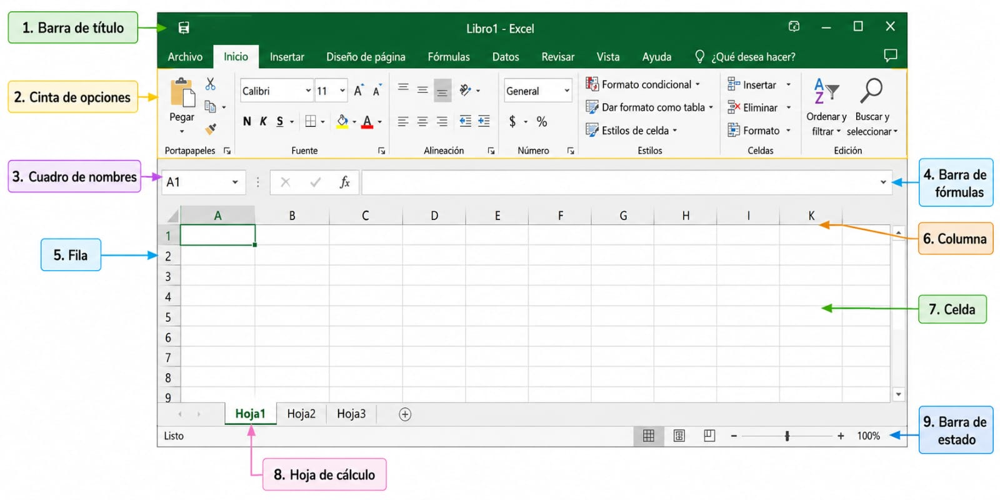

Microsoft Excel es uno de los programas más utilizados en el mundo para el
manejo de información numérica y textual. Forma parte del paquete Microsoft
Office y se ha convertido en una herramienta indispensable tanto en el
ámbito educativo como en el profesional.
A través de sus hojas de cálculo, los usuarios pueden organizar grandes
volúmenes de datos, realizar cálculos complejos mediante fórmulas y
funciones, crear gráficos dinámicos y automatizar procesos repetitivos
con el uso de macros.
El objetivo de esta presentación es conocer las características principales
de Excel, sus aplicaciones más comunes y la importancia que tiene en la
toma de decisiones basada en datos.
Entre sus principales usos se encuentran
Elaboración de presupuestos y control financiero
Análisis estadístico y generación de reportes
Creación de tablas dinámicas y dashboards
Gestión de inventarios y bases de datos simples
A lo largo de este trabajo exploraremos las funcionalidades básicas
de Excel, demostrando por qué sigue siendo una de las
herramientas más relevantes en el entorno educativo actual.
02
Objetivos
Objetivo general
Desarrollar los conocimientos y habilidades básicas para utilizar Microsoft Excel de manera práctica y sencilla, mediante el aprendizaje de sus principales herramientas, funciones y aplicaciones, con el propósito de que puedan organizar, calcular y presentar información de forma eficiente en sus actividades académicas y de la vida cotidiana.
Objetivos específicos
Identificar y conocer las principales herramientas y funciones básicas de Microsoft Excel para facilitar la creación y organización de información.
Aplicar los conocimientos adquiridos mediante ejercicios prácticos que permitan a los jóvenes elaborar tablas, realizar operaciones y presentar información de manera ordenada.
03
Competencias
✓ Comprende la importancia de Excel como una herramienta para organizar y trabajar con información.
✓ Aplica fórmulas y funciones básicas para realizar cálculos.
04
Indicadores de logro
Indicador 1
Identifica y utiliza correctamente las herramientas básicas de Microsoft Excel para crear y organizar información en una hoja de cálculo.
Indicador 2
Realiza operaciones y ejercicios básicos en Excel utilizando fórmulas y funciones de manera correcta y ordenada.
05
Contenido sobre Excel
INVESTIGACIÓN
¿Qué es Microsoft Excel?
Microsoft Excel es un programa de hojas de cálculo desarrollado por Microsoft. Permite organizar información en filas y columnas, realizar operaciones matemáticas, crear tablas, gráficos y analizar datos de forma rápida y sencilla.
¿Para qué sirve?
Excel sirve para elaborar presupuestos, controlar gastos e inventarios, registrar calificaciones, crear horarios, hacer cálculos automáticos mediante fórmulas y presentar información con gráficos.
Partes de la ventana de Excel
Barra de títuloBarra de acceso rápidoCinta de opcionesCuadro de nombresBarra de fórmulasColumnasFilasCeldasHojas de cálculoBarras de desplazamientoBarra de estado
¿Cómo insertar símbolos?

Abrir Microsoft Excel.
Seleccionar la pestaña Insertar.
Hacer clic en Símbolo.
Elegir la fuente y el símbolo deseado.
Presionar Insertar y luego Cerrar.
Conclusión de la investigación
Microsoft Excel es una herramienta muy útil para estudiantes, empresas y cualquier persona que necesite organizar información y realizar cálculos de manera fácil y eficiente.
Contenido complementario para aprender Excel
Contenido complementario
Repasa estos conceptos básicos.
Celdas
Son los espacios donde podemos escribir información.
Cada celda tiene una ubicación, como A1.
Filas y columnas
Las filas se identifican con números y las columnas
con letras. Juntas forman las celdas de la hoja.
Fórmulas
Las fórmulas permiten realizar cálculos automáticamente
y comienzan con el signo =.
Datos
En Excel podemos ingresar nombres, números, fechas,
calificaciones y diferentes tipos de información.
Recuerda:
La mejor manera de aprender Excel es practicar.
¡Realiza los ejercicios y juegos de este OVA!
06
Video educativo
Video sobre Microsoft Excel
Juegos de Excel
¡Diviértete mientras aprendes!
Pulsa click al boton "comenzar" para jugar.
Quiz de Excel
Responde las preguntas y demuestra cuánto aprendiste.
Crucigrama de Excel
Encuentra las palabras relacionadas con Excel.
Memoria de Excel
Encuentra las parejas y repasa los conceptos aprendidos.
```
08
Evaluación de excel
Importante:
Responde las siguientes preguntas con lo aprendido:
En conclusión, Microsoft Excel demuestra por qué es una de las aplicaciones que todo el mundo usa tanto en la escuela como en el trabajo para organizar números e información sin complicarse la vida. Al estar dentro del paquete de Microsoft Office, te da un espacio súper práctico donde puedes juntar un montón de datos desordenados y acomodarlos en tablas que sí se entienden.
Lo más genial de sus hojas de cálculo es que te ahorran el trabajo pesado: puedes hacer desde operaciones sencillas hasta cuentas bastante complicadas usando sus fórmulas y funciones, además de convertir esos números en gráficos para que todo se vea más claro. Y si tienes tareas que siempre son iguales y te quitan mucho tiempo, las macros te ayudan a automatizarlas para terminar mucho más rápido.
En el día a día, esto sirve muchísimo para armar un presupuesto, llevar el control de tus gastos, calcular estadísticas, ordenar listas de productos o inventarios, y armar reportes dinámicos que te ayuden a ver cómo van tus proyectos. Al final, después de revisar lo más básico de Excel, queda clarísimo por qué es una herramienta tan importante cuando estás estudiando: te ayuda a resolver problemas reales, a no perderte
entre tantas entregas y a tomar mejores decisiones basándote en datos reales.